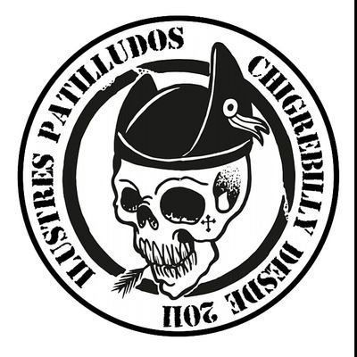
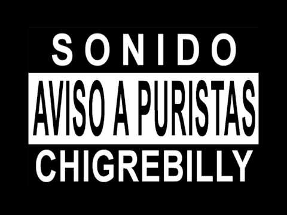
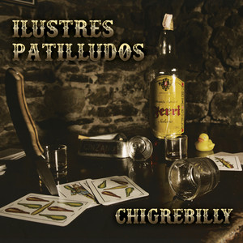
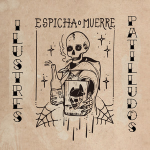

Gijón · Asturias · desde 2011
Los auténticos y genuinos reyes del Chigrebilly
▼¿Quién somos?
Ilustres Patilludos naz en Xixón en 2011 con una misión clara: xuntar nun mesmu escenariu el rock and roll, la música tradicional asturiana y el cantar de chigre. D'esa mestura imposible sal el Chigrebilly, un xéneru propiu con soníu compautu, cenciellu y direutu que se convirtió en referencia de la música asturiana.
Irreverentes y gamberros por vocación, apuesten pol humor y la ironía como arma tanto na música como nes lletres. Enriba l'escenariu, el so directu ye una fiesta garantizada: non de baldre fueron nomaos a Meyor Directu nos alloñaos Premios AMAS 2018.
El Chigrebilly nació de chigre en chigre y aína se-yos foi de les manes: nacieron y medraron na mítica Sala Savoy, desfilaron per múltiples sales, fiestes y festivales de toa España como por exemplu el Tsunami Xixón, asaltaron con éxitu la famosa Gruta 77 de Madrid y, yá que taben per ellí, acabaron plantándose na sala La Riviera nada menos que xunto a los sos queríos y entá más almiraos Los Berrones. Y a día de güei siguen tocando ellí onde los llamen.
El xéneru

El Chigrebilly ye la fusión del rockabilly col chigre: rock and roll de patilles y actitú, tonada y folk de tabierna, too regao con sidra natural. Una forma d'entender la música, l'amistá y la vida en xeneral — con un pie en Nashville, otru en Dublín y los dos bien plantaos nun llagar asturianu.
Les sos influencies van de les lleendes del country a los clásicos del folk irlandés, ensin dexar nunca de mirar pa la so vena punk:
Discografía

Debú grabáu n'Asturcón Estudios (Sotrondiu). Ocho cañonazos que definen un xéneru.

Dos singles con collaboraciones de luxu: Xune Elipe (Dixebra) n'«Espicha o muerre» — videoclip nomáu nos AMAS 2020 — y Chus Pedro (Nuberu) nuna versión mui particular del «Chalaneru».
Videoclips oficiales
En directu
Onde de verdá s'entiende el Chigrebilly ye en directu: fiesta asegurada, sidra na mano y guitarres echando fumu.
Para promotores y prensa
Especificaciones técnicas para conciertos: formación, plano de escenario y lista de canales.
Descargar PDFContratación y redes
En 2011, un comandu compuestu por cuatro de los meyores patilludos de Xixón foi condenáu por un delitu que sí cometieren: amestar el rock and roll col cantar de chigre. Nun tardaron en fugase del chigre nel que taben recluyíos. Güei, buscaos entá polos puristes, sobreviven como músicos de fortuna. Si tien usté un problema —una fiesta, una sala, un festival— y consigue alcontralos, quiciabes pueda contratar… a los Ilustres Patilludos.
Escríbenos pa contratación:
✉ ilustrespatilludos@gmail.com
Y pa too lo demás, yá sabes: vémonos nel chigre. 🍾